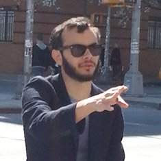
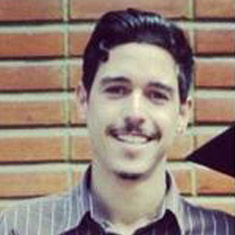
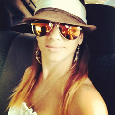
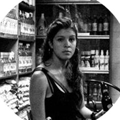
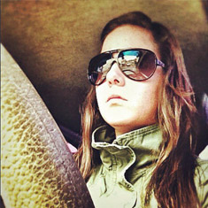

Who we are?
Every person on our team is an expert in their field therefore a part of a perfect gearset that optimizes our performance
You don't believe US?
Check US out
- +
GabrielJimenez
CEO Global Entrepreneur
Suli's from Venezuela, she's a national and international award-winning designer with more than 8 years of digital agency experience. She studied Advertising and Marketing, she has developed as a professional capable of providing exciting and intelligent solutions to each project, she provides excellent program management, because she's always looking forward to the search of new tools that will offer our customers upgrades on its image.
Always attentive to new trends and innovations in life because she believes: -"is the best way to stay in the digital marketing industry". Motion graphics lover, she likes to enjoy with her family and friends: -"We must maintain a balance between work and family"
- +
FroilanPaez
Administrator
Suli's from Venezuela, she's a national and international award-winning designer with more than 8 years of digital agency experience. She studied Advertising and Marketing, she has developed as a professional capable of providing exciting and intelligent solutions to each project, she provides excellent program management, because she's always looking forward to the search of new tools that will offer our customers upgrades on its image.
Always attentive to new trends and innovations in life because she believes: -"is the best way to stay in the digital marketing industry". Motion graphics lover, she likes to enjoy with her family and friends: -"We must maintain a balance between work and family"
- +
JoeRayGarcia
Business Executive
Suli's from Venezuela, she's a national and international award-winning designer with more than 8 years of digital agency experience. She studied Advertising and Marketing, she has developed as a professional capable of providing exciting and intelligent solutions to each project, she provides excellent program management, because she's always looking forward to the search of new tools that will offer our customers upgrades on its image.
Always attentive to new trends and innovations in life because she believes: -"is the best way to stay in the digital marketing industry". Motion graphics lover, she likes to enjoy with her family and friends: -"We must maintain a balance between work and family"
- +
ChrisMiller
Sales Manager
Suli's from Venezuela, she's a national and international award-winning designer with more than 8 years of digital agency experience. She studied Advertising and Marketing, she has developed as a professional capable of providing exciting and intelligent solutions to each project, she provides excellent program management, because she's always looking forward to the search of new tools that will offer our customers upgrades on its image.
Always attentive to new trends and innovations in life because she believes: -"is the best way to stay in the digital marketing industry". Motion graphics lover, she likes to enjoy with her family and friends: -"We must maintain a balance between work and family"
- +
PiityParra
General Manager Piity was an Account Director in Wikot
Suli's from Venezuela, she's a national and international award-winning designer with more than 8 years of digital agency experience. She studied Advertising and Marketing, she has developed as a professional capable of providing exciting and intelligent solutions to each project, she provides excellent program management, because she's always looking forward to the search of new tools that will offer our customers upgrades on its image.
Always attentive to new trends and innovations in life because she believes: -"is the best way to stay in the digital marketing industry". Motion graphics lover, she likes to enjoy with her family and friends: -"We must maintain a balance between work and family"
- +
GabrielaFlores
Chief Content Officer Gaby was Content Manager for the digital arm of Saatchi&Saatchi, where she worked with a very qualified and creative team
Suli's from Venezuela, she's a national and international award-winning designer with more than 8 years of digital agency experience. She studied Advertising and Marketing, she has developed as a professional capable of providing exciting and intelligent solutions to each project, she provides excellent program management, because she's always looking forward to the search of new tools that will offer our customers upgrades on its image.
Always attentive to new trends and innovations in life because she believes: -"is the best way to stay in the digital marketing industry". Motion graphics lover, she likes to enjoy with her family and friends: -"We must maintain a balance between work and family"
- -
MarianaBrand
Art Director Senior Web Designer in JWTCaracas where she developed a great experience in motion graphics.
< backSuli's from Venezuela, she's a national and international award-winning designer with more than 8 years of digital agency experience. She studied Advertising and Marketing, she has developed as a professional capable of providing exciting and intelligent solutions to each project, she provides excellent program management, because she's always looking forward to the search of new tools that will offer our customers upgrades on its image.
Always attentive to new trends and innovations in life because she believes: -"is the best way to stay in the digital marketing industry". Motion graphics lover, she likes to enjoy with her family and friends: -"We must maintain a balance between work and family">
- +

CarlosLozada
Digital Marketing Assistant
Suli's from Venezuela, she's a national and international award-winning designer with more than 8 years of digital agency experience. She studied Advertising and Marketing, she has developed as a professional capable of providing exciting and intelligent solutions to each project, she provides excellent program management, because she's always looking forward to the search of new tools that will offer our customers upgrades on its image.
Always attentive to new trends and innovations in life because she believes: -"is the best way to stay in the digital marketing industry". Motion graphics lover, she likes to enjoy with her family and friends: -"We must maintain a balance between work and family"